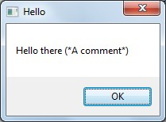

[BACK]
Here are the enhancement requests I consider most important to PhraseExpress development. Many of them would eliminate some of the problems you may encounter.
[go] Allow for '-count' inside {#insert ...}[go] Escape strings[go] Get the un-interpreted code from a phrase[go] Optional strict-execution mode[go] Handle infinite loops with "max-iteration" config-var[go] Color-code unfound phrases, only when explicitely-requested from within in a single phrase[go] Allow comments in a MSGBOX, BALLOON, and an INSERTFILE's path[go] Get the ascii-code for a provided character'-count' inside {#insert ...}A very helpful shortcut for
{#LOOP {#insert zSomePhrase} -count 3}
would be
{#insert zSomePhrase -count 3}
and, ideally, the count parameter would allow variables.
Infinite loops (such as when a phrase calls nothing but itself), cause PhraseExpress to crash. The following global settings would alleviate this problem:
Maximum recursive iterations (set to -1 for no maximum): [put-number-here]
When maximum reached
( ) Stop execution with an error dialog
(o) Ask user to either continue or stop execution
To prevent the problem of parameter-values containing dash-parameter-names:
{#SUBSTR {#ESCAPESTRING GET-THE-STRING~FROM-HERE~TO-THERE} -from 21 -count 13}
In addition, it would be nice to have some way to put literal curly's into SETPHRASE-s and CLIPBOARD-s.
zPrintSomeStuff
{#insert zPrintAnX}yz
Calling
{#insert zPrintSomeStuff}
results in 'xyz'
There is no current way to display a phrases uninterpreted code.
As someone who develops many phrases that generate other phrases (that is, they print PhraseExpress code into text-files), it would be invaluable to be able call a phrase with
{#INSERTLITERAL zPrintSomeStuff}
which would print that phrases source code:
{#insert zPrintAnX}yz
A benefit of accessing uninterpreted code, would be to save and then restore the clipboard, for the sake of processes that must temporarily overwrite it. In addition, since I use the Dvorak keyboard layout, I cannot use
{#CLIPBOARD -paste}
I must use
{#INSERTCLIPBOARD}
which is always interpreted, and is a big headache.
Easily the biggest help from a debugging point of view, would be the ability to immediately fail when a called-phrase is not found, with a modal dialog containing diagnostic information, and a button to go directly to the phrase containing the problem-call.
I see this being implemented in two ways.
This implementation is only possible if it would not result in dramatic slowdown. If it could indeed be fast, then I would personally always turn it on ('strict=yes').
This strictness would be overridable only from within individual phrase-calls:
{#insert -nostrict zPhraseThatMayOrMayNotExist}
If the global implementation is not possible (or is simply set to 'strict=no'), then strictness could be turned on in a single phrase, by placing these at the beginning and end:
{#STRICT -on}
or
{#STRICT -off}
(Placing these permanently in numerous phrases would result in this mode being turned on and off uncontrollably.)
This is secondary, although very complementary to the request for strict mode.
When in PhraseExpress and viewing a single phrase, I wish I could push a '[Validate Calls]' button, which would run through all this phrases code. If any call is referring to a phrase that does not exist, it would be highlighted it in a bright and configurable color.
MSGBOX, BALLOON, and an INSERTFILE's pathCurrently, when a comment is part of the '-text' field, in either a MSGBOX or BALLOON, it is literally-displayed.
{#MSGBOX -head Hello -text Hello there (*A comment*)}

Displaying comments literally severely limits the ability to document your code, especially when the contents being displayed happen to multiple phrase-calls deep.
In addition, comments anywhere in the path of an INSERTFILE prevents the file from being read.
Given a specific character, it would be useful to automatically get its acsii-code returned. For example:
{#COND -if {#asc 69} = {#ASCFORCHAR E}
-then Same character
-else Different character}